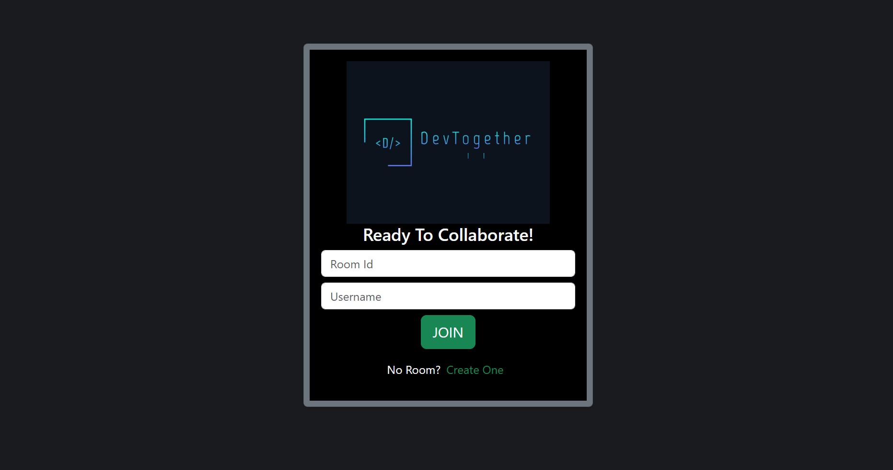
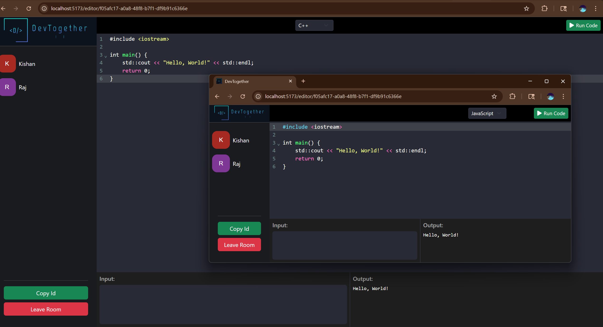
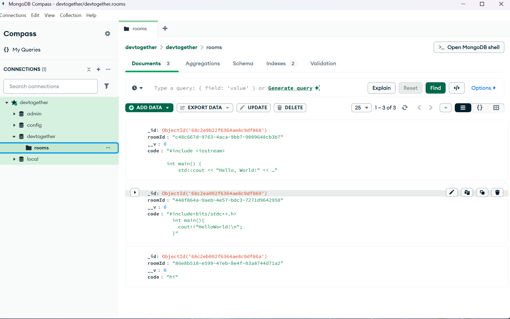

Distributed Collaborative IDE



the problem
Most collaborative editors either lag under concurrent edits or fall apart when sessions scale past a handful of users — conflict resolution and sync latency are the two things that quietly break these tools in production.
what i built
A real-time collaborative code editor over WebSockets with a custom sync layer for multi-user live editing, a scalable backend execution engine with multi-language support, and MongoDB-backed session management so state survives reconnects and scales past a single-server setup.
impact
Cross-device edit latency down 15ms; build/execution times cut 20%; currently handling 350+ users across live sessions.